HomeGuard Activity Monitor- это инструмент для мониторинга активности пользователей при работе в интернете и в автономном режиме. Позволяет выбрать конкретного пользователя и время мониторинга. Автоматически может блокировать нежелательный контент на основе ключевых слов.
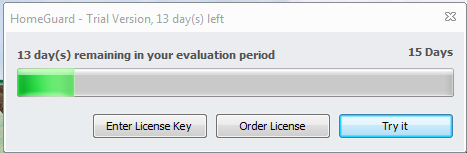
Первым делом нас встречает окно с напоминанием о том, что наша версия ограниченная и лицензия длится всего 2 недели.
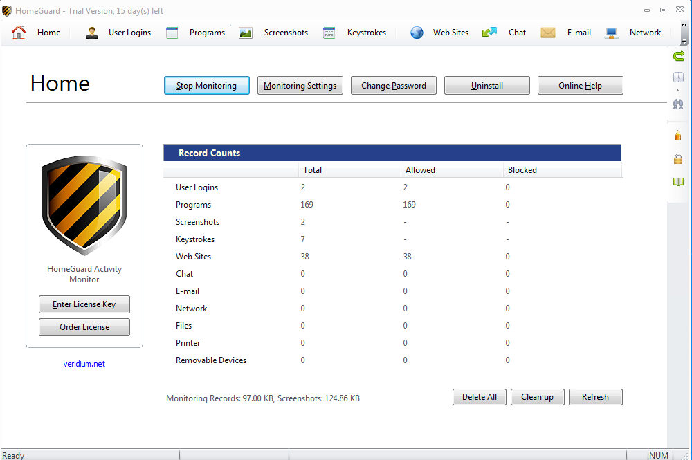
На рисунке №2 изображено главное окно программы.
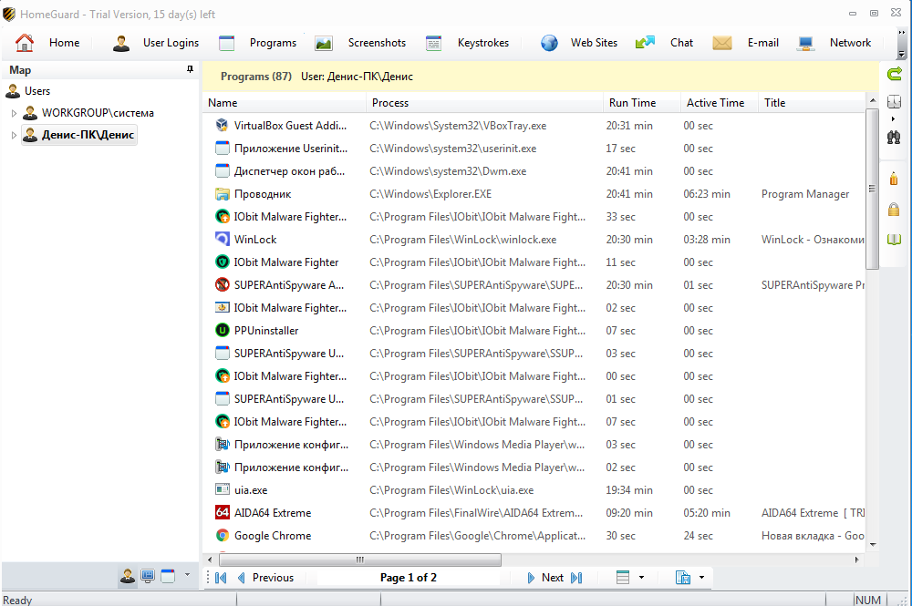
Программа записывает время работы каждой программы. И пользователь имеет возможность просмотреть все программы, а также узнать сколько проработала программа.
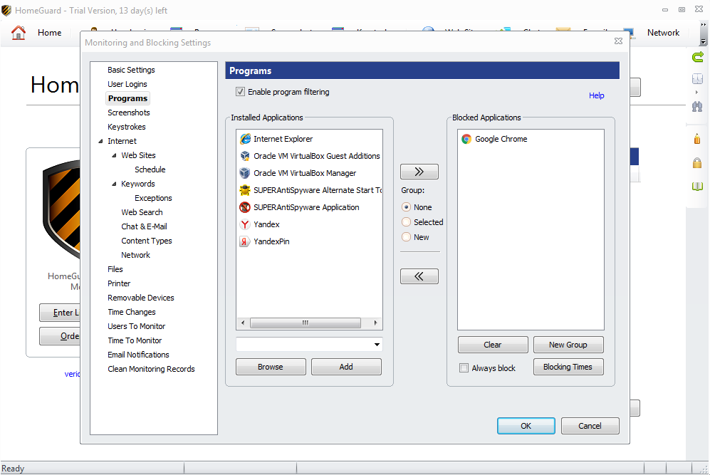
Меню настроек. В данном случае мы в параметрах блокировки программ, где можно заблокировать любую установленную программу. Примером будет браузер Google Chrome.
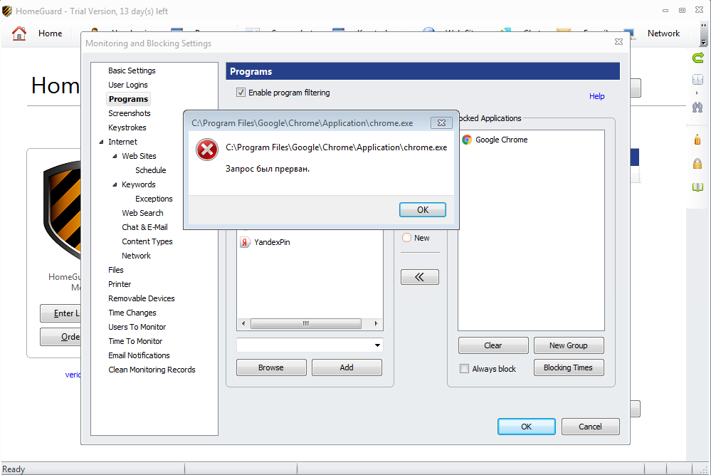
Как можно видеть на рисунке №5 блокировка программы сработала, мы не смогли запустить браузер Google Chrome.
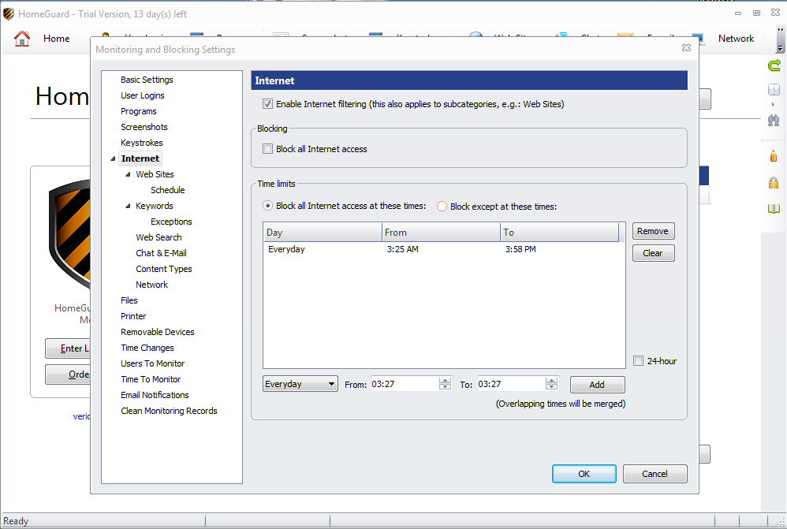
Также можно включить интервал доступ к интернету, так можно задать интервал, в течении которого будет возможность получить доступ к веб-ресурсам.
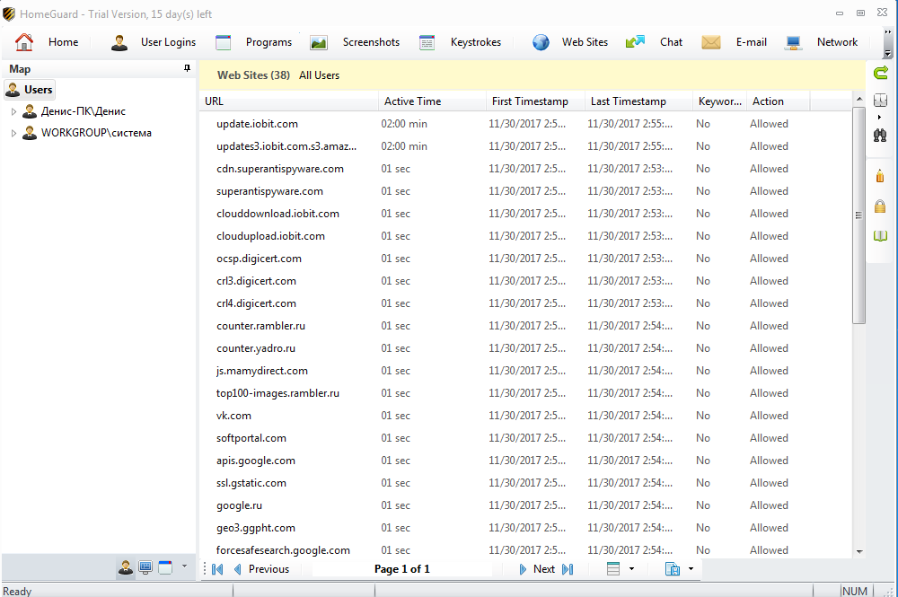
Также можно просматривать статистику посещения сайтов, время нахождения на каждом сайте, и также даты посещения.
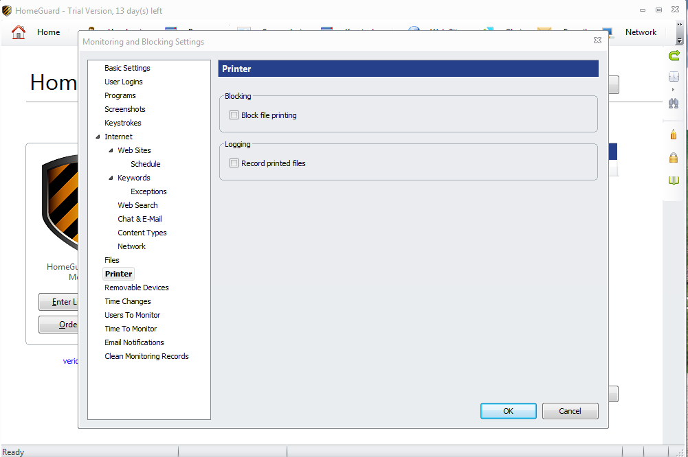
Также можно заблокировать возможность печати через принтер или же записывать все попытки распечатки принтером.
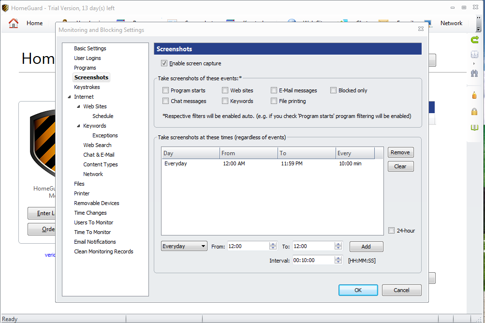
Также можно проводить отслеживание системы путем записывания скриншотов. Можно задать интервал, во время которого проводится запись скриншотов, а так как часто будет проводиться запись.
В моем случае выставлен параметр записи 24 часа в сутки каждые 10 минут.
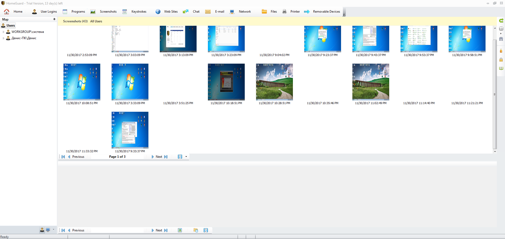
На рисунке №10 видно все скриншоты, сделанные за период работы программы. Каждый скриншот имеет дату и время создания.
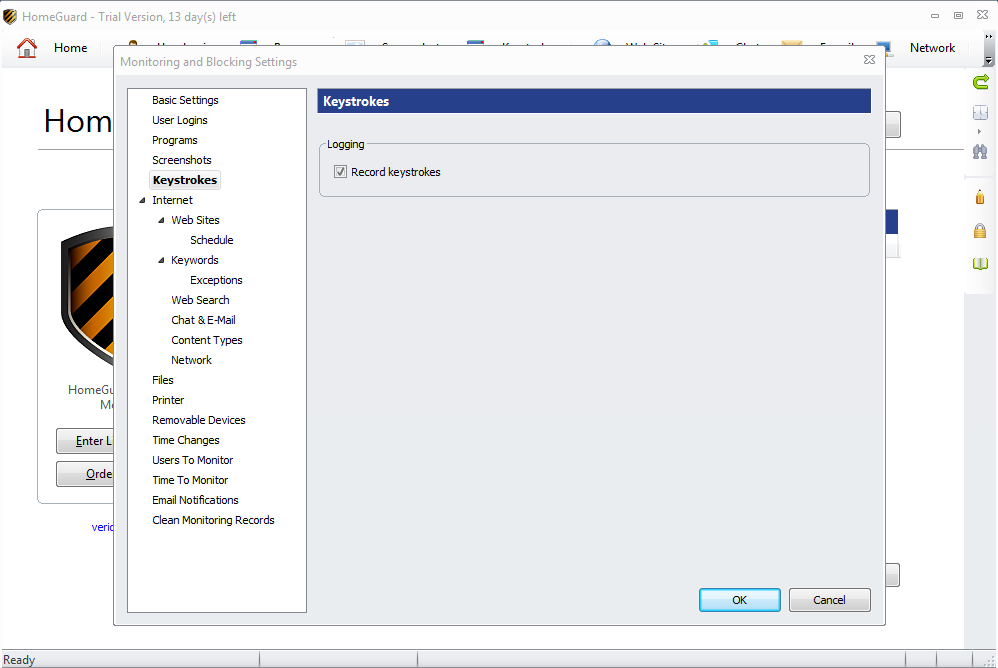
HomeGuard Activity Monitor также имеет возможность записывать все нажатия на клавиатуру.
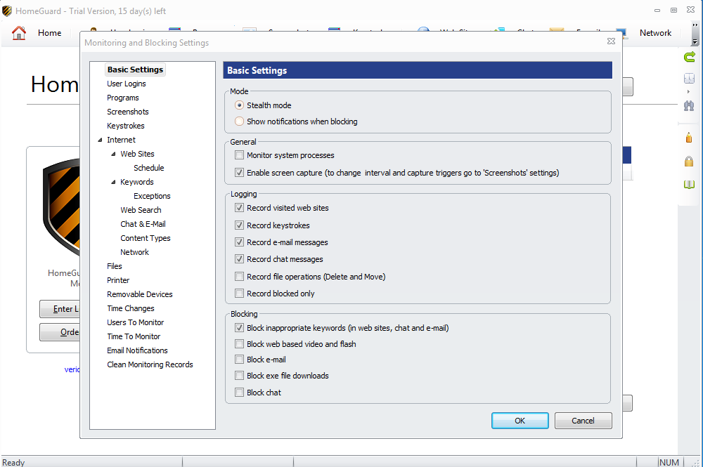
На рисунке №12 представлено окно со списком программ, в которых были применены клавиши с клавиатуры.
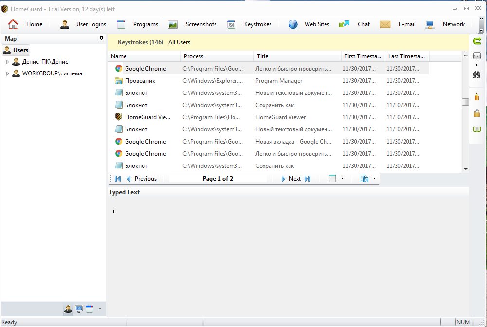
Можно просмотреть все клавиши, которыми мы пользовались. В пример можно взять блокнот. Как можно увидеть у нас записывают абсолютно все клавиши, включаю клавишу “backspace”. Таким образом если пользователь что-то напишет и сразу же сотрет, то в любом случае программа покажет нам это.
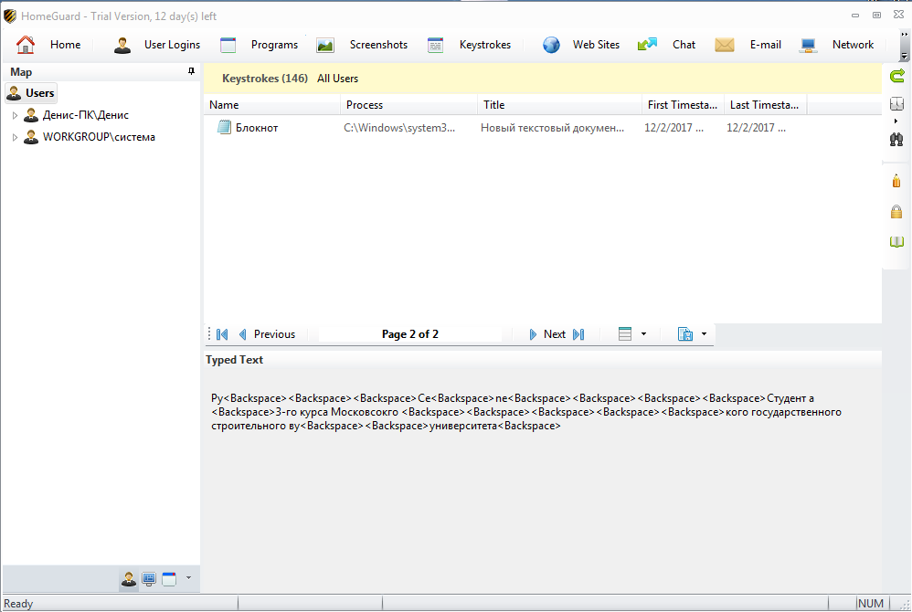
На рисунке №14 можно видеть основные настройки программы. Здесь можно выбрать запись клавиш клавиатуры, запись посещенных сайтов, запретить скачивание файлов с расширением “EXE” и многое другое.
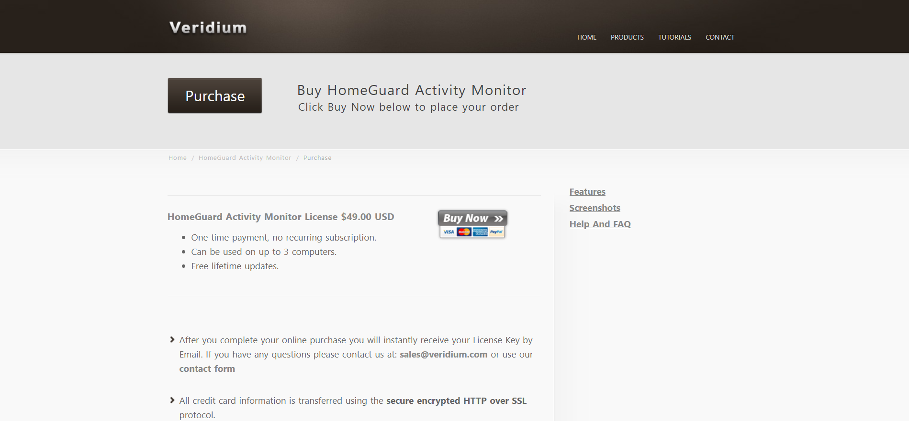
Что касается стоимость программы, то лицензия на 3 устройства стоит около 2800 рублей.
В общем программа оказалась довольно интересной как для домашнего использования, так и для использования в небольших и средних организациях.
Возможно какое-то производство требуется постоянного мониторинга работы системы, в этом случае программа идеально подойдет. Или же если требуется постоянно составляет отчет о проделанной работе, то с помощью HomeGuard Activity Monitor можно это осуществить.
Также можно использовать программу как дома, так и в учебных заведениях. Можно ограничить посещение веб-ресурсов или же блокировать использования интернета в определенное время.
Так родители могут установить программу на компьютер ребенка и выставить интервал, в которое будет возможен доступ к выходу в интернет. Это позволить ребенку не отвлекаться и выполнять домашнее задание. Помимо этого, можно включить фильтрацию веб-ресурсов.